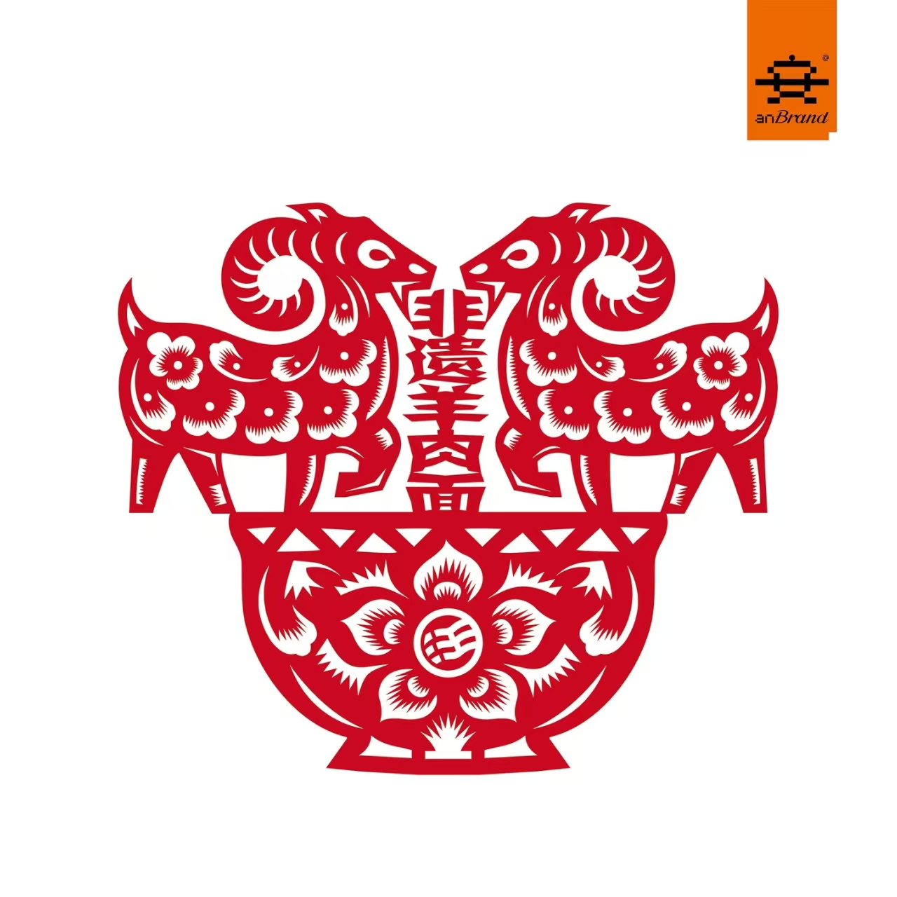
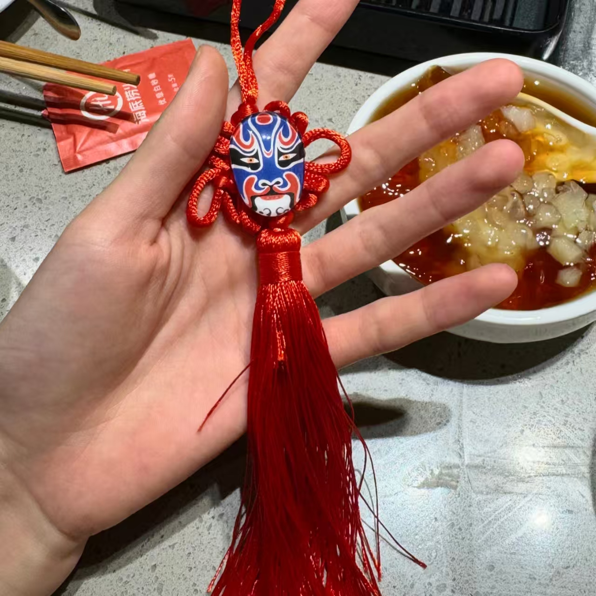

🍽️ 餐厅联动
舌尖上的非遗跨界 · 一餐一饭皆有故事
🍽️ 从西贝莜面村到海底捞，从星巴克到肯德基……
🌾 餐厅正在用美食讲述非遗的故事。
🍜
汪茂元羊肉面
1 个联动

汪茂元羊肉面
汪茂元羊肉面 × 陕北非遗老字号
1979年创立 · 三代传承
🔥 陕西老字号
榆林老字号
非遗美食
汪茂元羊肉面创始于1979年，由汪茂元在绥德县四十里铺创立，至今已传承三代人、四十余年。品牌被评定为“榆林老字号”和“陕西老字号”，门店招牌标注“非遗老字号”。招牌羊肉面精选陕北横山羊肉，肉质鲜嫩、不腥不膻，搭配手工揪面片和久煮羊骨汤，香而不膻、爽滑筋道。从绥德四十里铺到榆林、西安，汪茂元羊肉面已成为陕北特色美食的靓丽名片，承载着陕北人的味觉记忆。[citation:2]
💡 意义： 一碗传承四十余年的羊肉面，承载的是陕北非遗美食文化的活态传承。从食材选料到制作工艺，从一家店到如今多家直营店，汪茂元三代人以匠人之心守护着陕北老味道。
🍽️
海底捞
1 个联动

海底捞
海底捞 × 川剧变脸 · 非遗表演进餐厅
长期 · 门店表演
🔥 热门
川剧变脸
国家级非遗
海底捞在全国多家门店引入川剧变脸表演，将国家级非遗川剧变脸融入火锅用餐体验。顾客在享受火锅的同时，可以近距离观看变脸艺人的精彩表演，感受川剧艺术的魅力。海底捞还将川剧变脸与生日祝福、节日庆典等场景结合，让非遗表演成为用餐体验的一部分。
💡 意义： 将非遗表演融入日常餐饮消费场景，让非遗不再遥远，成为大众触手可及的文化体验。
☕
星巴克
1 个联动

星巴克
星巴克 × 广府醒狮 · 非遗概念店
2026年 · 广州永庆坊
🔥 热门
醒狮
粤剧
国家级非遗
2026年1月，星巴克华南首家非遗概念店于广州永庆坊开业。门店以“广府非遗会客厅”为定位，将粤剧、醒狮等岭南非遗元素融入咖啡空间。二楼楼梯端景墙的“粤狮新语”装置，以岭南醒狮为原型，融合粤剧戏服面料、竹编工艺与星巴克标志性绿围裙元素，赋予广府文化新寓意。门店还推出限定饮品“醒狮拿铁”和醒狮冰箱贴、醒狮挂饰等周边产品，让非遗文化以日常消费为载体走进年轻人的生活。[citation:1][citation:7]
💡 意义： 国际咖啡品牌与岭南非遗的深度对话，让醒狮、粤剧等非遗文化以“第三空间”为媒介触达更广泛的消费群体，实现了非遗的生活化、年轻化传播。